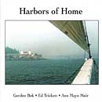

Reviews of Gordon Bok's Music
- Other Eyes
- Gordon Bok in Concert
- In the Kind Land
- Neighbors
- Harbors of Home
- Schooners
- Concert Reviews
- Quotable Reviews
- Support The Arts
Harbors of Home
by Gordon Bok, Ed Trickett & Ann Mayo Muir
copyright 1998, THD-CD010
This review is written by Kevin McCarthy, May 1999
Blending their well-known warm harmonies with pleasing solo segments, Gordon Bok, Ed Trickett and Ann Mayo Muir provide a solid sense of place, a connection to a multitude of legacies, in their latest release "Harbors of Home." Traversing from the worlds of migrant farm workers, to Australian sheep ranchers and itinerant Aussie wanderers, to shipbuilders, sailors, boats and fishermen, this trio authenticates pieces of history, remembrances of people, places and events too often shunted aside into undeserved obscurity.
Presenting, as always, a smoothness and clarity in their vocals, Bok, Trickett and Muir also provide a sense of poignancy in a number of their tunes through their emotive harmonizations. Pulling at the heartstrings with "We Built This Old Ship," depicting the transition from canvas sailing ships to those powered by engines and boilers, they harmonize:
"...We built this old ship with our sweat and endeavor
She ran with the wind and the wind set her free
And we once dared to dream she would sail on forever
But although she was ours she belonged to the sea..."
Continuing on, they add:
"...Will there be a monument held by each wave
Will the gulls sing a dirge as they circle above
When the length of the sky at last marks her grave
Will her name be remembered with wonder and love..."
"The Outside Track," a heartfelt Henry Lawson poem set to music by Gerry Hallom, is another remarkably affective cut. Describing the emotional void created as swagman after swagman (itinerant wanderers) marries, settles down and depletes the ranks, it goes:
"...For they marry and go and the world rolls back
They marry and vanish and die
But their spirits shall live on the outside track
long as the years go by..."
Judy Small's "From the Lambing to the Wool" provides a litany of the difficulties facing cockies, Australian sheep farmers in the Outback. Written from the wife's ambivalent perspective, these hard times "and there've been times when I wonder if it all was worth the doing" are buffered by a sense of fulfillment "and there've been times when I thought this was the finest place there is." The song concludes with a drollful statement of pride:
"...And the children have grown and
left me for careers in town and city
And I'm proud of them but sadly
for none chose station life
And now I smile to hear them talking
'bout the hard slog in the office
For when I think of working hard
I see a cocky and his wife."
Portraying the life of migrant workers in "Great Valley's Harvest," they describe the various hardships endured by these harvesters. With incisive irony, the song closes with:
"...It's up and down the valley all 12 months of the year
Burnt brown in summer's oven and chilled in winter drear
We live among the richest crops this country has to grow
Through our hands the valley's treasure, our nation's health and pleasure, a taste not ours to know."
The allegorical spiritual "Farthest Field" is the consummate vehicle for vocal harmonizing. Describing a joyous and deserved final resting place, the song goes:
"...Oh my dear friends I truly love
To hear your voices alifted up in radiant song
Though through the years we all have made
Our separate choices we've ended here where we belong...
...Walk with me and we will see the mystery revealed
When one day we wend our way up to the farthest field."
"Wiscasset Schooners" is another wistful piece reliving the time when "spars gave way to smokestacks" and boats that dutifully served their purpose were sent aground and abandoned. The last verse is:
"...Now the people come and stare at you
with wonder in their eyes
For times have changed since men knew
how to work a ship your size
And the seas you sailed a'running black
in time we'll know our loss
It's too late now for you but is it too late now for us
Can you teach us what you know before you go..."
"Turning of the Year," a well-placed selection that closes out the release, presents the warmth and wisdom made possible through age and experience. As a bidding to all, the last lines are:
"...So friend or foe, we wish you ease
however far you roam
Who sail the seven salty seas
or walk the hills of home...
...To friends we had and foes we had and those that held us dear
We raise the glass to lad and lass at turning of the year."
This is the kind of music from the kind of performers you want to invite into your home. You know your life will be touched and enriched by doing so. Bid them soon.
Track List:
Great Valley's Harvest (3:23) Words and music by Helen Kivnick
From the Lambing to the Wool (5:32) Words and music by Judy Small
Napoleon Crossing the Chesapeake Bay Bridge Tunnel/Flight of the Haggis (5:35) Music by Bob Zentz
We Built This Old Ship (4:00) Words and music by Jim Stewart and Gordon Bok
Pigs Can See the Wind (2:21) Words and music by Dave Goulder
The Outside Track (4:39) Words by Henry Lawson, music by Gerry Hallom
Gaelic Farmer/Lady's Triumph (4:54) Traditional
Farthest Field (3:31) Words and music by David Dodson
Velveteen Love Song (4:02) Words and music by Bob Franke
Old Man's Song (3:41) Words and music by Bill Scott
Harbors of Home (4:10) Words and music by Joan Spring
Rowan Davies (4:20) Music by Phil Cunningham
Dancing at Whitsun (3:15) Words by John Austin Martin, music traditional
Wiscasset Schooners (4:49) Words and music by Lois Lyman
Turning of the Year (3:26) Words by J.B. Goodenough, music by Gordon Bok